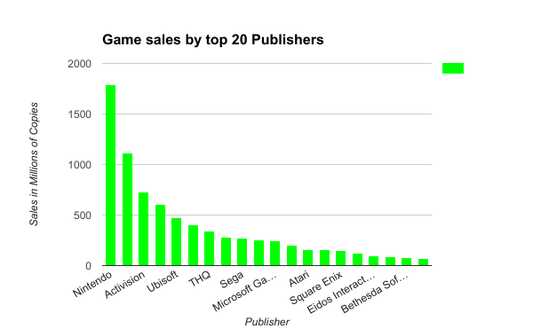
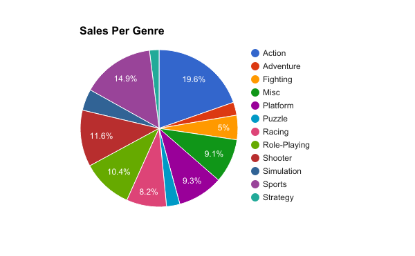
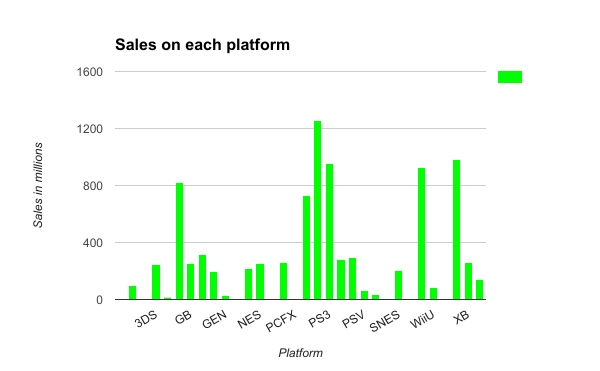
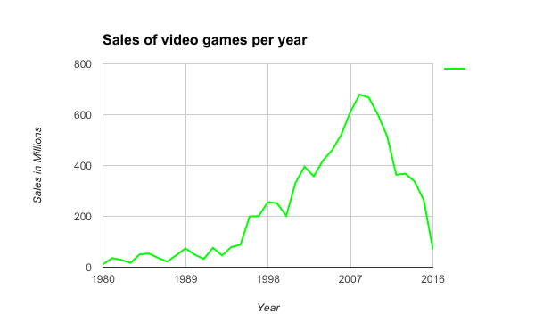

This bar graph shows that according to this data set, Nintendo has had the largest amount of sales compared to other Video game publishers.

This pie chart shows which genres of video games have sold best since 1995

This bar graph displays the relationship between each platform and their coresponding sales. It also shows the PS3 is the most succesful platform

This line grapgh shows that according to this data set the year 2007 had more sales than any other year since 1980